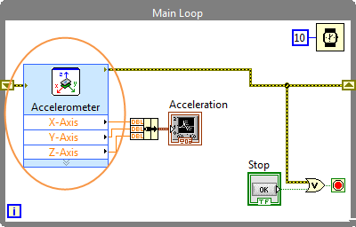
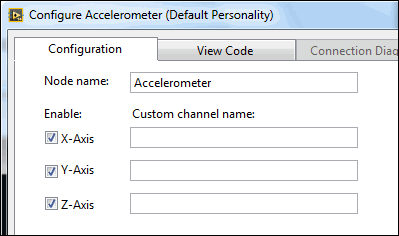
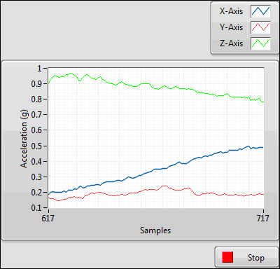

Part 2: Controlling the Accelerometer
The myRIO contains an onboard accelerometer that measures the magnitude and direction of acceleration. This part of the tutorial teaches you how to create an application to read acceleration values from the onboard accelerometer and to display the acceleration values on a waveform chart. Before starting this part, make sure you have completed the previous part of the tutorial.
 |
|
 |
|
 |
|
Congratulations! You have successfully programmed to control the onboard accelerometer.
Before you proceed to the next part of the tutorial, spend some time understanding the block diagram of the Main VI. The block diagram uses a Flat Sequence structure that executes the following frames from left to right:
- Initialize—Initializes the error in cluster to specific values.
- Acquire and process data—Acquires acceleration values from the onboard accelerometer by using the Accelerometer Express VI and displays the acceleration values by using a waveform chart. The Main Loop repeats the code until you click Stop or an error occurs.
- Close—Resets the onboard accelerometer before the application exits.
Now, proceed to program the onboard LEDs.